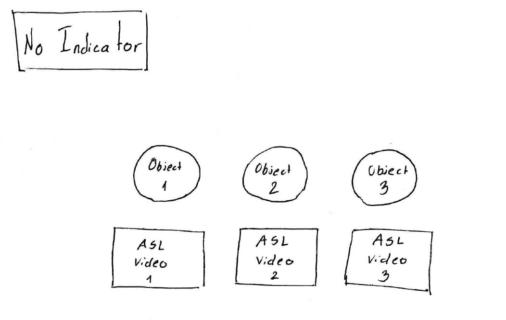
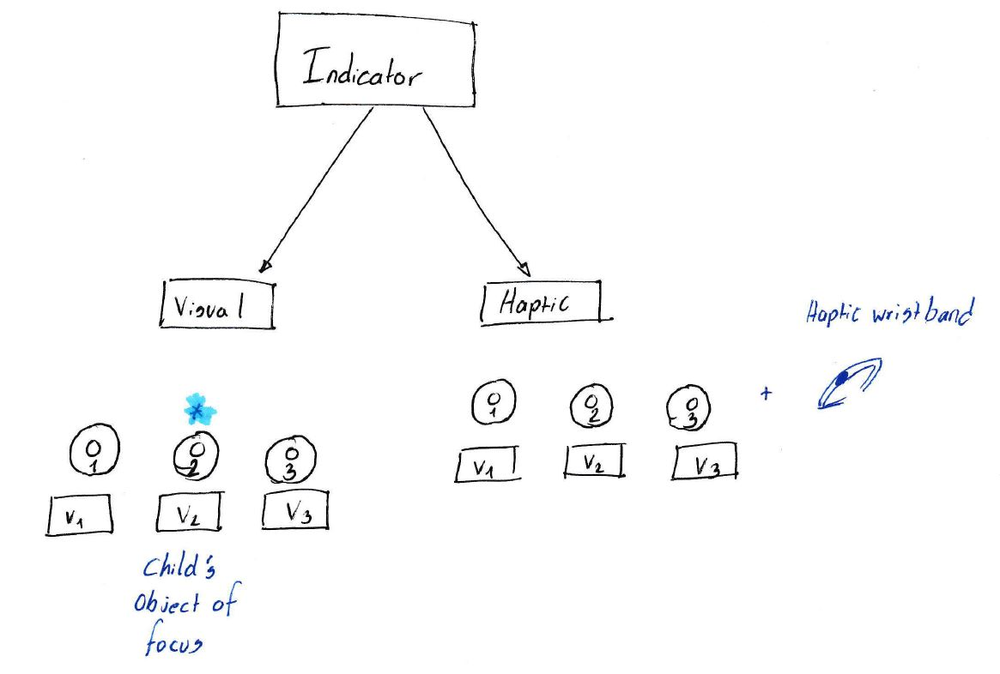

Week 6: User Conditions and Design Day!
This week we went over the system design and decided to modify our research question, which would help structure our ongoing investigation. Since we are focusing on two critical aspects of language development, joint-attention and American Sign Language acquisiton, we decided to subdivide our main research question:
- RQ 1.1: Can visual/audio/tactile feedback of child’s gaze increase parental awareness?
- RQ 1.2: Can a parent who signs based on child’s attention/focus improve language exposure?
We created two user conditions to gather observational data to answer our research questions. The first condition is providing our system to the user, which does not provide an indication of the infant’s visual attention. Whereas, in the second condition it does. The indicator is the feedback we give to the parent of the object their infant is looking at. As of now, we’re thinking about the indicator either being visual or haptic. The goal is to see how much of the parent’s communicative behaviors are influenced by the feedback prompts (aka the indicators). Below is a visual representation of the two user conditions:
 We also decided to participate in Design Day, which is an event where undergraduates present their research and capstone projects. So for next week, I’ll create the user scenario illustrations and draft the writing materials for the poster.